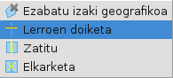
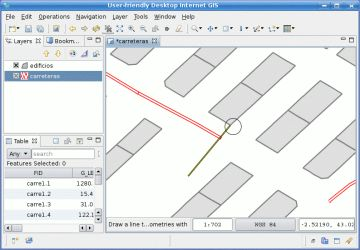

Doiketa lerro bat erabiliz LineString-ak puntu bateraino doitzen ditu.
Doiketa lerro bat erabiliz LineString-ak puntu bateraino doitzen ditu. Doiketa lerro bat erabiliz LineString-ak puntu bateraino doitzen ditu.
Lerro doiketa tresnak erabiltzaileak marrazturiko Doiketa lerro bat erabiltzen du, geometriek Doiketa lerroa gurutzatzen duten puntutik Doiketa lerroaren eskuinerantz LineString Featureak mozteko.
Lerro doiketa tresnak jadaneko geruzan aukeratutako featureen gain eragiten du. Lerro doiketa tresna erabili aurretik doitu behar diren featureak garbitzeko, Bounding Box bat erabili daiteke edo ta featureak aukeratzeko beste edozein bide. Jadaneko geruzak ez badu inongo aukeraketarik ezarrita, Lerro doiketa tresnak edozein featureren gain eragingo du jadaneko geruzan, zeinen lehen geometria Lerro doiketarekin gurutzatua izan daiten.
Oso garrantzitsua da Doiketa lerroa marrazten den moduak, azkenengo emaitzan nola eragiten duen ultzea, oinarrizko featureak gurutzaketa puntutik Doiketa lerroaren eskuinerantz moztuak izango diren zentzuan.
Lerro doiketa tresna feature bat moztera doanean, honek doitzen dagoen featurea aldatuko du, bere lehen geometriaren berezitasunari balio berri bat emanez.
Gogoratu beharra dago Lerro doiketa tresnak ez duela emaitza gordetzen, nahi izanez gero eragiketa desegitea uzten bait dizu, edo aldaketak gorde barnealdeko datuen tokira uDig-ek normalean egingo lukeen bezala.
Lerro doiketa tresna aukeratu hedatze zerrendatik 1 irudian agertzen den bezala.

1 irudia. Lerroen doiketa tresna aukeratuz.
Doiketa lerro bezala erabiliko den lerroa marraztu, zatitu nahi diren geometriak gurutzatzen dituela ziurtatuz, 2 irudian agertzen den bezala.
| Aholkua Snap-aren portaera erabili dezakuzu Doiketa lerroaren erpinak beste feature batzuen erpinetara automatikoki salto egin dezan. |

2 irudia. Doiketa lerroa marraztu LineString bat mozteko.
Klik bikoitza egin Doiketa lerroaren azkenengo erpina gehitzeko eta Lerro doiketa tresnari jardun dezan adierazteko.
3 irudiak adierazten du nola Doiketa lerroagatik gurutzatua izan den geruza honen LineString-a gurutzagune puntutik Doiketa lerroaren eskuinerantz moztua izan den.

3 irudia. LineString doitua.
{kind=link}